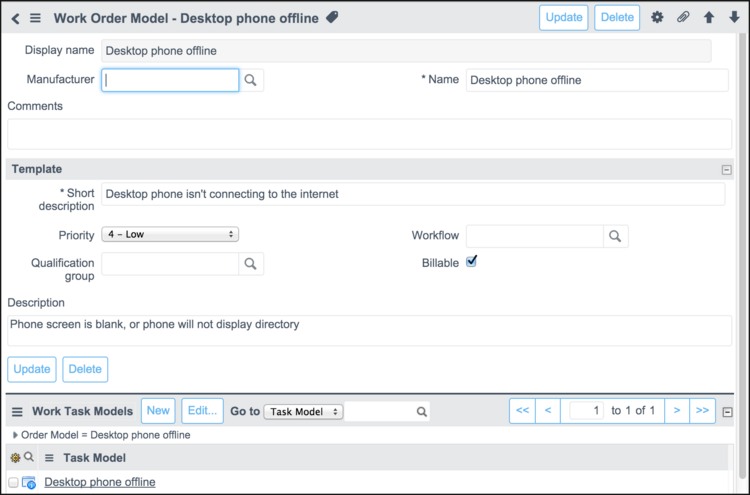

Work Order Models - Versions Prior to Fuji
Contents
1 Overview
You can create well-defined work orders quickly by using work order models defined in the product catalog as templates (starting with the Eureka release). These templates automatically create tasks and part requirements on work orders for common activities, such as password reset or memory upgrades. Work order models and work task models are added to the product catalog when work management is activated. Users with the wm_admin or model_manager role can create, edit, and delete work order models and work task models.
Configure work order models as templates and use them to create work orders by performing these procedures:
- Create a work order model
- Create a work task model
- Define part requirements
- Use the work order model as a template
| |
Note: References to Work Management indicate that the information on this page is valid for ServiceNow versions prior to Fuji. In the Fuji release, Work Management was renamed Field Service Management. |
2 Create a Work Order Model
ServiceNow uses the work order model as a source of information for populating fields in a work order when the model is used as a template.
- Navigate to Product Catalog > Product Models > Work Order Models
- Click New.
- Fill in the fields, as appropriate (see table).
- Right-click the form header and select Save from the context menu.
- The form remains open and you can create appropriate work task models.
- 
{kind=link}
| Field | Description | |
|---|---|---|
| Display name | [Read-Only] Name that appears in lists to identify the record. When you save the record, the system generates the display name based on the Manufacturer and Name values. | |
| Manufacturer | Manufacturer of hardware, software, or consumable items for this model. | |
| Name | Unique and descriptive name for this model. | |
| Comments | Details about this work order template. This content is not used for any processing. | |
| Template | ||
| Short description | [Required] Content that is copied into the Short description field of a work order when this work order model is used as a template. The exception to this is a work order created from an incident, problem, or change request, which always uses the short description of the source task, even when a template is applied. | |
| Description | Detailed description copied into a work order created from this template. For example, you might provide a description of the computer, monitor, telephone, chair, and other supplies required for employee onboarding. The system uses this content for the description of the resulting work order. | |
| Priority | Priority of the work orders created from this template. | |
| Qualification group | Qualification group responsible for providing technical details to a work order created from this template. This field is hidden when automatic qualification is configured. | |
| Auto-dispatch | Option to dispatch tasks automatically for a work order created from this template. To be ready for dispatch, tasks must be in the Pending Dispatch state and contain this information:
For more information, see Using Auto-Dispatch. | |
| Billable | Option to mark tasks created from this work order template as billable. | |
| Related Lists | ||
| Work Task Models | Work task models associated with this work order. The system uses the information in these records to create tasks automatically when this work order model is used as a template. | |
3 Create a Work Task Model
ServiceNow uses the work task model record as a source of information for populating fields in a work order task. In the Work Task Models related list of a work order model, click New. Most of the information in the Work Task Model form is identical to that in the Work Order Model form and is populated automatically. Refer to the table in the Create a Work Order Model section for descriptions of fields used in both forms. Create one or more work task models, using the fields in the Template section:
{kind=link}
| Field | Description |
|---|---|
| Short description | [Required] Content that is copied into the Short description field of the work order task when the parent work order model is used as a template. |
| Skills | Skills required to perform this task. Click the lock icon to open and close the selection panel in the glide list. For more information about the controls on this panel, see Using Watch Lists. |
| Task Description | Detailed description of the expected work that is copied into a work order task created from this template. |
| Task estimated duration | Estimated time required to perform this task. This value is copied to the Estimated work duration field in a task created automatically from a work order task model. |
4 Define Part Requirements
The system automatically populates the part requirements for a work order task from the information contained in the part requirements for the work task model.
- Navigate to Product Catalog > Product Models > Work Task Models.
- Select a work task model.
- In the Part Requirements related list, click New.
- Fill in the fields, as appropriate (see table).
- Click Submit.
{kind=link}
| Field | Description |
|---|---|
| Model | [Required] Model name of the part required. |
| Work order task | Name of the parent task. The system automatically completes this field. |
| Required quantity | [Required] Number of these parts required for the task. |
| |
Note: When you save the record, ServiceNow adds the short description from the template and the quantity. The system does not check for part availability at this time. |
5 Use the Work Order Model as a Template
Work order models enable users with the proper roles to create work orders, tasks, and part requirements automatically by using the models as templates.
- Navigate to Work Management > Work Order > Create New.
- In the Work Order form, select the appropriate work order model from the Template field and save the form.
- The system uses the template information to:
- Copy the short description, priority, and billable status to the work order. The system also copies the qualification group to the work order form if this field is present. Qualification groups are not required when automatic qualification is configured. Work orders created from an incident, problem, or change request display the short description from the source task, even when a template is selected. Tasks for work orders created from templates always display the short description from the task model.
- Create any tasks, using the information from the work task models.
- Create the parts requirements. If a part specified is out of stock, the system displays a message naming the part.
- The system uses the template information to: